Voxel Factory
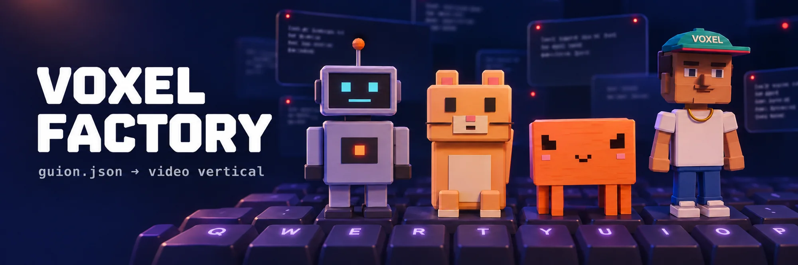
Escribís quién habla y qué dice. Sale un video vertical con personajes voxel, voces, gestos y subtítulos.
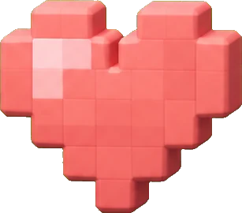
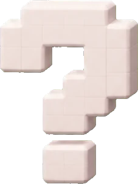
Robot y gato. Dos presets armados con piezas en JSON.
Persona y cubo. Gestos e íconos en la palabra justa.
Ningún plano se encuadró a mano.
La fábrica elige un primer plano por línea, mide cada voz y cierra con un plano general alejado. Estos dos salieron con voces de ElevenLabs y GPUs de Modal.
Si se arma con cubos, actúa.
Un personaje nuevo es un archivo JSON de piezas: tamaño, color, pivote y qué pieza es la boca. Sin tocar código.
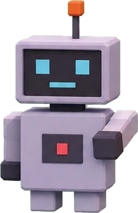
robot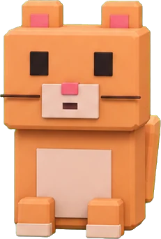
cat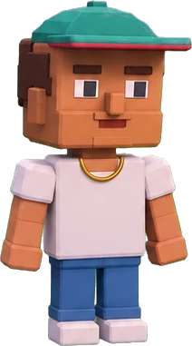
person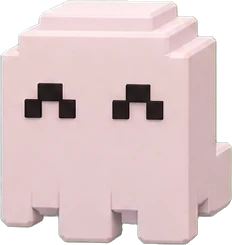
tuyo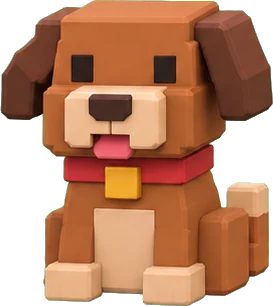
tuyo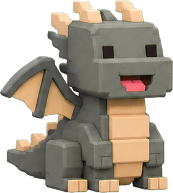
tuyo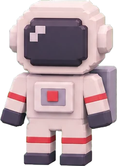
tuyo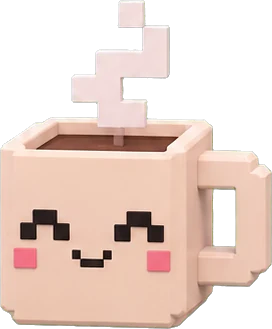
tuyoHoy vienen person, cube, robot y cat. Los de la segunda fila son ideas para tu próximo characters/*.json.
Dice «duermo» y se le cierran los ojos.
Con las voces de ElevenLabs la fábrica sabe en qué instante cae cada palabra, y el cubo reacciona justo ahí. Son 16 emociones y 10 íconos.
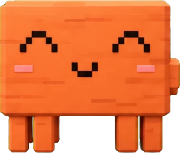
happy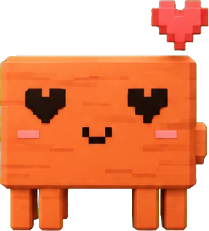
love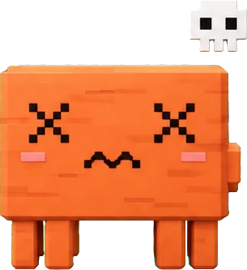
dizzy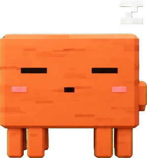
sleepy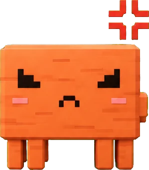
angry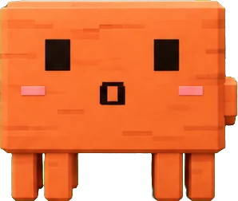
surprised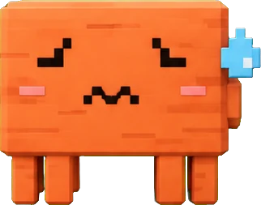
worried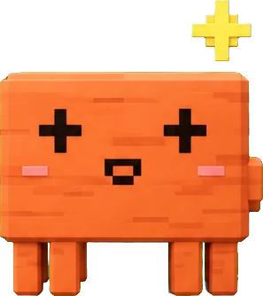
excited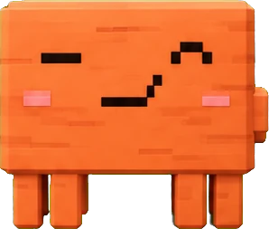
smugEntra un guion, sale un MP4 comprobado.
Antes de entregar, decodifica el video entero y revisa el formato vertical, el audio de cada línea y cada subtítulo en su intervalo.
Tu GPU o diez en la nube.
Con --cloud modal, Blender se reparte en tramos sobre GPUs alquiladas. Voces, unión y verificación siguen en tu máquina: el MP4 sale idéntico.
Probalo en cuatro comandos.
Python 3.10+, Blender 4.2+ y FFmpeg con libass. No hay paquetes para instalar.
# un guion desde líneas de diálogo python3 voxel.py new -o videos/teclado/guion.json \ --cast A=robot,B=cat \ --line "B: Ese teclado es mío." \ --line "A: Detecto un gato sobre el teclado." python3 voxel.py validate videos/teclado/guion.json python3 voxel.py render videos/teclado/guion.json --cloud modal python3 voxel.py open videos/teclado # la escena en tu Blender
Hecha para que la use tu agente.
Claude Code, Codex o cualquier agente con terminal pasa de un pedido a un video leyendo AGENTS.md.
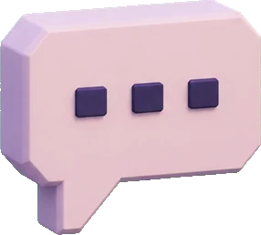
Errores con ruta
validate lista todos los problemas, por ejemplo shots[2].acting.B.emotion, con una sugerencia de arreglo.
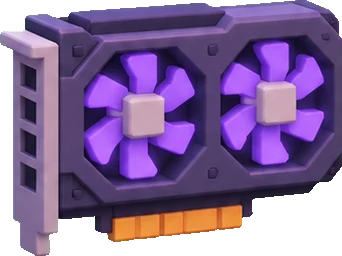
Códigos de salida estables
2 guion inválido, 3 falta una dependencia, 4 falló el render, 5 la verificación no pasó. Y --json en todo.
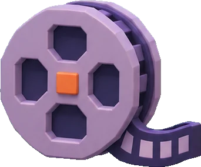
Tomas versionadas
Cada render queda en tomas/toma-NN/ con video, subtítulos, escena de Blender y guion resuelto.
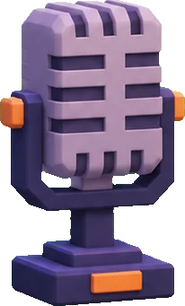
Claves fuera del repo
ElevenLabs y Modal se configuran en un .env local. Sin claves, usa voces del sistema.